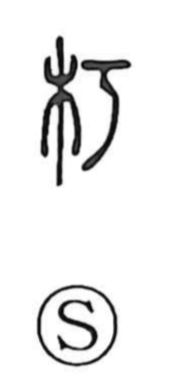

朽

Uncategorized
Kun: kuchiru | On: kyu
to rot ・ to decay
Explanation
朽 is a phono-semantic character. The left side is ki, wood, and the right side is a phonetic element read ko, pictured as a small knife whose blade bends like a bow. The scene evoked is of scraping the surface of a tree with such a knife; once pared, the wood readily rots. From this concrete image the meaning to rot, to decay arose, while the phonetic element provides the on-reading kyu.